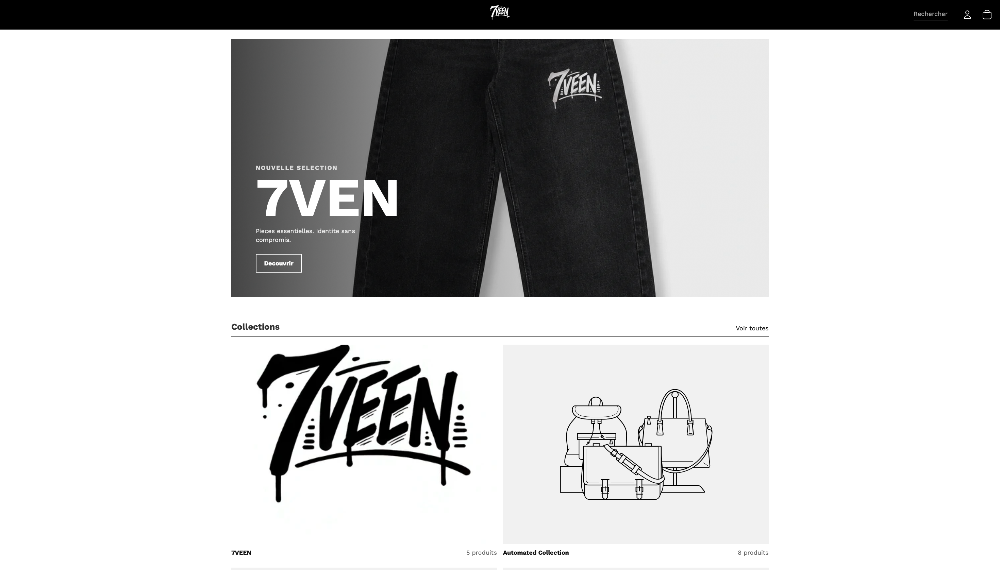

Formation Shopify et Liquid
Découverte de l'architecture d'un thème, des sections, des collections, des produits et de l'administration Shopify. Les formations suivies constituent un parcours d'apprentissage, pas une certification de maîtrise.
Stage de première année · 26 mai – 26 juin 2026
Pendant mon stage, l'équipe m'a proposé de créer un site sur lequel m'exercer. 7VEEN m'a permis d'appliquer les tâches confiées et ma formation à Shopify et Liquid.
J'étais en formation au sein de l'équipe. Les sites clients et partenaires n'étaient pas accessibles pour mes exercices : j'ai donc créé 7VEEN, une boutique fictive utilisée comme support de travail pendant le stage.
J'y ai travaillé sur le thème, les données de produits et les fonctionnalités de Shopify en parallèle des ressources de formation.
Boutique fictive réalisée en stage

Découverte de l'architecture d'un thème, des sections, des collections, des produits et de l'administration Shopify. Les formations suivies constituent un parcours d'apprentissage, pas une certification de maîtrise.
Exercices sur une boutique fictive : produits, collections, métachamps et métaobjets, avec une introduction à GraphQL.
Exploration d'un workflow et d'un exercice de points de fidélité dans l'environnement d'entraînement.
Découverte de BMAD, préparation du cadrage, des tâches et des vérifications du projet. Ce travail m'a permis de relier la réalisation technique à l'organisation d'un projet.
Les captures d'administration, ressources internes et documents de stage ne sont pas diffusés dans cette version publique. Ils sont conservés séparément, en attendant leur vérification avant toute diffusion.
Cette présentation ne constitue pas une validation de toutes les compétences ni une publication de livrables clients.
La pré-synthèse rassemble les activités du stage et des AP pour expliquer les compétences mobilisées.
Voir les compétences du bloc 1